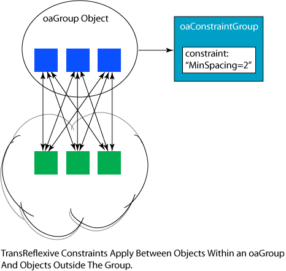
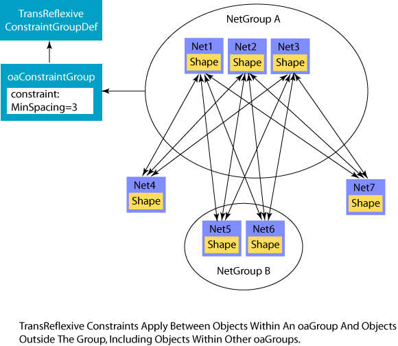
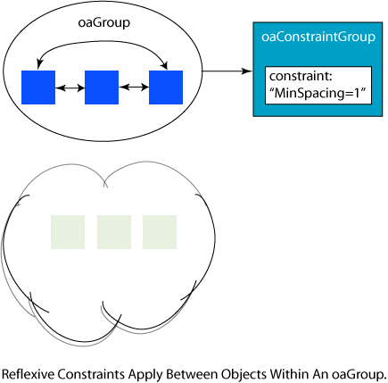
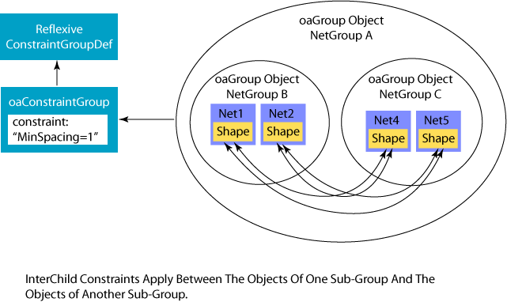

|
 |
 |
||||||
|
|
|
||||||
These types of constraint groups, and the corresponding constraint group definitions, are intended to apply to objects within oaGroup containers. These types of constraint groups provide more flexibility and a greater degree of control for applying constraints.
TransReflexive constraints apply between each object within a container and all objects outside of the container. For example, it is often necessary to apply constraints between a differential net pair and other nets in order to minimize noise on the differential pair. The oaTransReflexive constraint group semantics are intended for this type of application. The following figure illustrates the semantics.
The constraints apply between each object in the container object and each object outside the container object. The constraints do not apply between the objects within the container object, nor do the constraints apply between the objects outside of the container. Further, if a container object includes other container objects, the constraints apply between the sub-container objects and those objects outside of the parent container, but the constraints do not apply between objects within the sub-containers nor between objects in the sub-containers and other sub-containers or objects in the parent container. The following figure illustrates how the constraints apply.
Reflexive constraints apply between the objects within a container. For example, it is often necessary to apply constraints between a differential net pair that are different from the constraints necessary between the differential net pair and other nets. The oaReflexive constraint group semantics are intended for this type of application. The following figure illustrates the semantics.
The constraints apply only between the objects within the container and do not apply between objects within the container and objects outside of the container.
The InterChild constraint group semantics are a variant of the Reflexive constraint group semantics. Constraints in an InterChild constraint group apply between the relevant objects in a sub-group and all objects in other sub-groups. If InterChild constraints are applied to an oaGroup that has no sub-groups, the semantics for applying the constraints are identical to the semantics for Reflexive constraint groups. The following figure illustrates the semantics for InterChild constraint groups.
